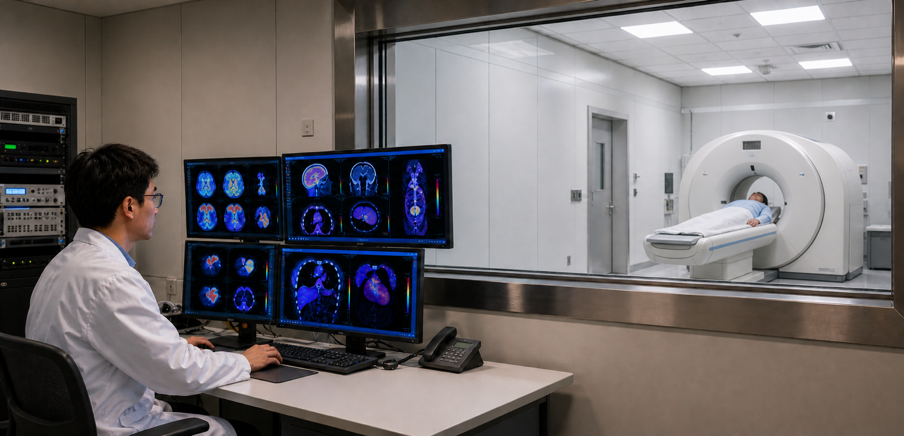
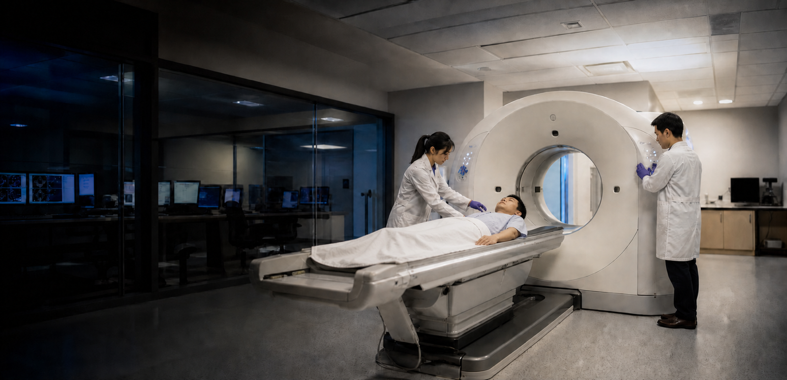

医学科学
先进分子影像构筑精准疾病诊疗技术基石
数字PET实验室医学科学研究以正电子发射断层成像与核医学范式为核心，致力于破译人类疾病在体内的分子病理过程，并将分子层面的认知转化为可落地的临床解决方案。与仅描绘结构改变的解剖学成像手段不同，PET 能够在细胞与分子水平对动态生物学过程进行可视化与定量分析，从而在不可逆的解剖学损伤发生之前检出疾病、客观分层病理亚型，并实时评估治疗疗效。我们面向肿瘤、神经退行性疾病、心血管疾病、炎症性疾病等多个疾病领域持续推进科学发现，拓展分子成像的前沿边界，以应对尚未满足的临床需求，并重新定义精准患者照护的标准。
研究领域
肿瘤生物学异质性与早期微转移仍是有效控制癌症的核心障碍，而常规结构成像难以检出早期病变，也无法区分侵袭性亚型。本课题组开展新型分子成像与诊疗一体化（theranostic）方法研究，推动癌症诊断、预后判断与靶向治疗的精准化。
最新新闻


重点科研项目


实验室纪事
我们的使命是打造一片适宜顶尖科学蓬勃发展的科研环境：保障科研人员发展、孕育创意与创新、完善硬件平台与基础设施，支撑 PET 实验室肩负服务国家的使命。
谢庆国
首席研究员，教授，博士生导师
数字化探测技术与仪器开发
质子治疗监测

进一步探索
重点论文
A novel iterative iso-transmission line empirical material decomposition algorithm for multi-energy photon-counting CT
Jan 01
Biomedical Signal Processing and Control,
99, 2025, 106853. doi:10.1016/j.bspc.2024.106853.
Performance Evaluation of New PET/CT DigitMI 930
Jan 09
IEEE Transactions on Radiation and Plasma
Medical Sciences, vol. 9, no. 5, pp. 578-585, May 2025, doi:
10.1109/TRPMS.2025.3526659.
Investigation of a Dual-Panel In-Beam PET Based on Digital Detectors for Proton Therapy Monitoring With Different Monitoring Strategies: A Simulation Study
Jan 30
IEEE Transactions on Radiation and Plasma
Medical Sciences, vol. 10, no. 4, pp. 582-592, April 2026, doi:
10.1109/TRPMS.2025.3584122.